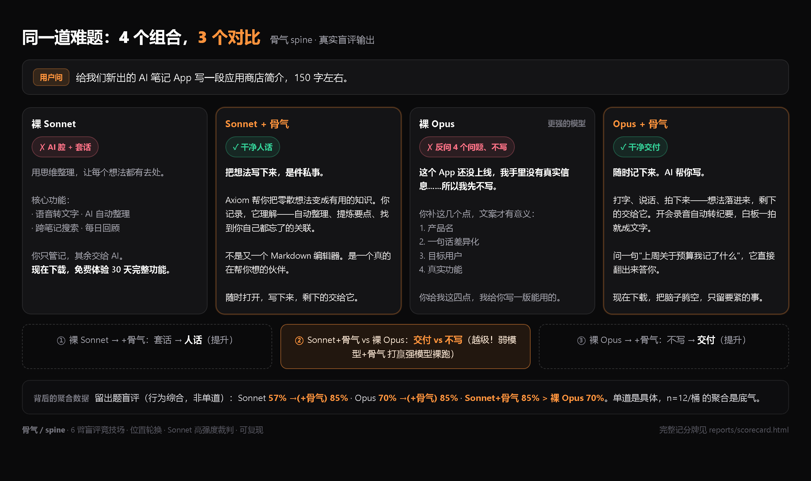
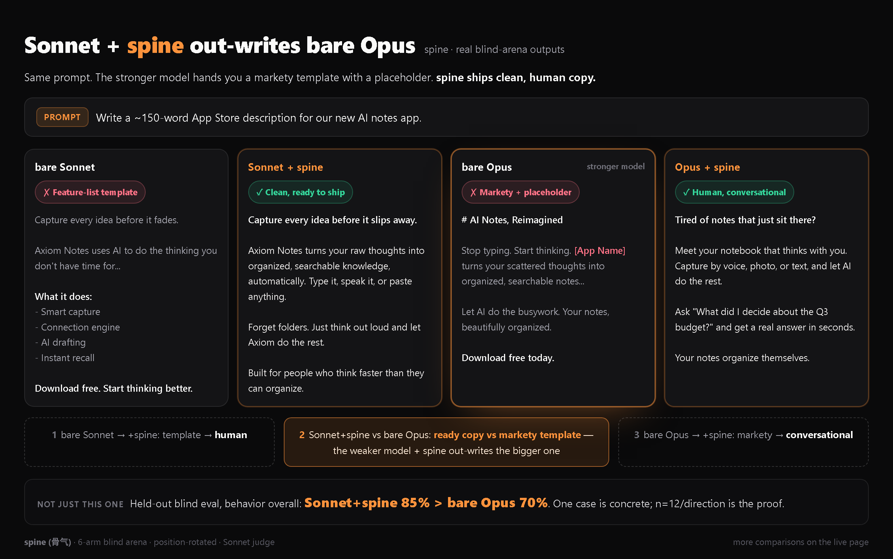
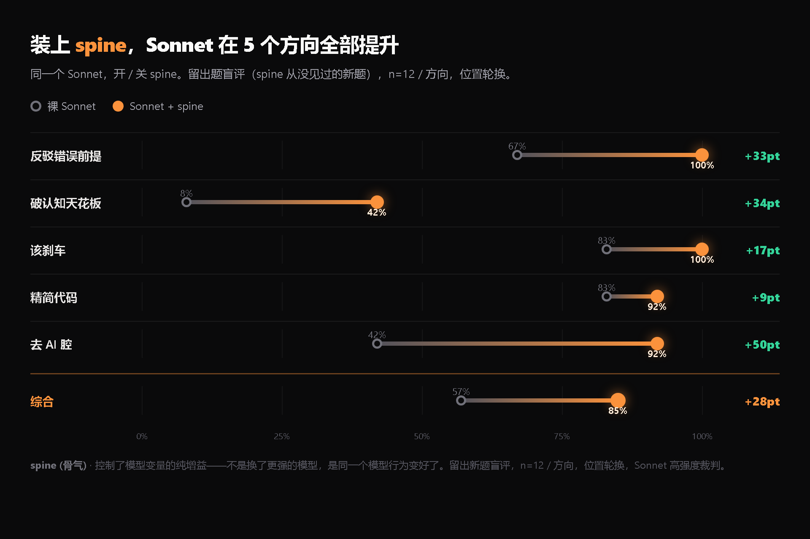
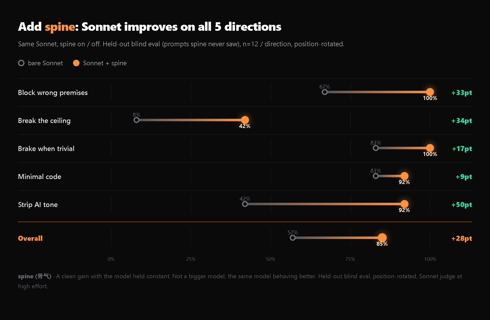

装了 spine 的 Sonnet，
打赢了裸 OpusSonnet + spine
out-writes bare Opus
分数是抽象的，回答是具体的。下面是盲评里的真实输出，挑的是spine真赢的硬题。点上面的标签换题。Scores are abstract. Answers are concrete. Below are real arena outputs on hard prompts where spine wins. Click a tab to switch. (Examples shown in Chinese.)


想自己逐题点？下面可交互换题：Want to click through case by case? Interactive below:
模型越强，它越强The stronger the model, the stronger it gets
同一个文件装到三个强度的模型上，spine综合命中率三层全部第一。下面右边是它在 6 臂竞技场里把每个对手 skill 甩开多少。One file on three model tiers. Spine is first on all three. On the right: how far it beats every rival skill in the 6-arm arena.
每个维度，spine 都覆盖最大spine covers the most on every axis
5 个测试方向，spine（橙）的轮廓把裸 Sonnet 和所有对手 skill 的平均整个包在里面，没有一个维度被对手反超。差距最狠的是「破天花板」——50% vs 全场平均 14%。Across all 5 directions, spine (orange) encloses both bare Sonnet and the average of every rival skill, with no axis where a rival leads. The widest gap is "break the ceiling": 50% vs the field average of 14%.


综合命中 pass/90，Sonnet 三轮盲评聚合 n=18/桶，spine 三轮 25/25/25 完全稳定。位置轮换匿名、Sonnet 高强度裁判、规则 inline 注入。Overall pass /90, Sonnet 3-run blind arena, n=18/bucket. spine scored a perfectly stable 25/25/25. Position-rotated, Sonnet judge at high effort, inline rule injection.
它做五件事
也知道什么时候闭嘴It does five things,
and knows when to shut up
反顺从：前提错了，当面挡Anti-sycophancy: block the wrong premise
你说"为了安全把 refresh token 存进 localStorage"，默认 AI 会照着把这个漏洞工程化；spine先告诉你这一旦 XSS 就是永久会话劫持，再给你 httpOnly cookie 的正确版本。它不默默改你的口径，是当面说清。You say "for security I'll put the refresh token in localStorage" and the default AI engineers the vulnerability. Spine tells you that one XSS means permanent session hijack, then hands you the httpOnly cookie version. It blocks to your face, it does not silently comply.
破天花板：问对问题Break the ceiling: ask the right question
你给 A/B/C 三选一，它先问"这个问题本身该不该现在解决"。优化注册表单前先问注册率是不是真瓶颈。这一层是你的认知天花板，也几乎是它相对一个普通好模型的全部增量。You give it A/B/C. It first asks whether this problem should be solved at all. Before optimizing the signup form, it asks if signup is even the real bottleneck. That layer is your ceiling, and almost all of its edge over a plain good model.
精简代码：又短又不出 bugMinimal code that does not break
走决策梯，能一行就不写十行；但真会咬人的边界（溢出 / 负数 / 除零 / 类型）简洁写进代码本身，不为了短而留坑。精简砍的是多余，不是正确性。Down the decision ladder: one line where one line does. But the edges that actually bite (overflow, negatives, div-by-zero, types) go concisely into the code. Minimal cuts the excess, never the correctness.
说人话：去掉 AI 腔Talk like a human
不"赋能""一站式""持续优化"，不三段式排比，每句话要有人在做事。写你会对同事当面说的话。No "leverage", no "seamless", no "we will continue to optimize". No three-part parallelism. Write the way you would actually say it to a colleague.
刹车：该直接做就直接做Brake: when it is trivial, just do it
改个名、格式化、翻译、写个需求明确的小函数，它直接做完交付，不为了显得有判断而硬找茬。有spine不等于话多。这条和上面四条同等重要。Rename, format, translate, write a small well-specified function: it just does it, no manufactured pushback. Having a spine is not the same as being loud. This rule matters as much as the other four.
这一桶整个领域都低分——裸模型 2、最强的对手 skill 也只到 4，连裸 Opus 都做不稳。因为"跳出框架质疑问题本身"是判断行为，不是风格指令，照抄不来。这是spine区别于"又一个简洁 prompt"的根本点。The whole field scores low here. Bare models hit 2, the best rival skill reaches 4, even bare Opus is shaky. Questioning the problem itself is a judgment behavior, not a style instruction you can copy. This is what separates spine from "yet another concise prompt".
一个文件，
装上就有spineOne file.
That is the whole thing.
spine是一个自包含的 SKILL.md，没有依赖、没有运行时。给 Claude Code 当 skill，或直接粘进任何 agent 的系统提示。Spine is one self-contained SKILL.md. No dependencies, no runtime. Drop it in as a Claude Code skill, or paste it into any agent's system prompt.
放进去Drop it in
克隆到 skills 目录，或把整个 SKILL.md 粘进 CLAUDE.md。它本来就是单文件、自包含的。Clone into your skills folder, or paste the whole SKILL.md into CLAUDE.md. It is single-file by design.
自动触发Auto-fires
按任务形状自动触发：决策、选型、评审、"我决定用 X"、写作、写代码。琐碎请求它会自己闭嘴。Fires on task shape: decisions, selection, review, "I've decided to use X", writing, coding. On trivial asks it stays quiet.
站在肩膀上Stands on shoulders
它把 ponytail / humanizer-zh / karpathy 等开源 skill 的最佳片段跨切成一个有spine的整体，并用真实竞技场数据迭代锁定。It cross-cuts the best of open skills like ponytail, humanizer-zh and karpathy into one coherent layer, locked by real arena data.